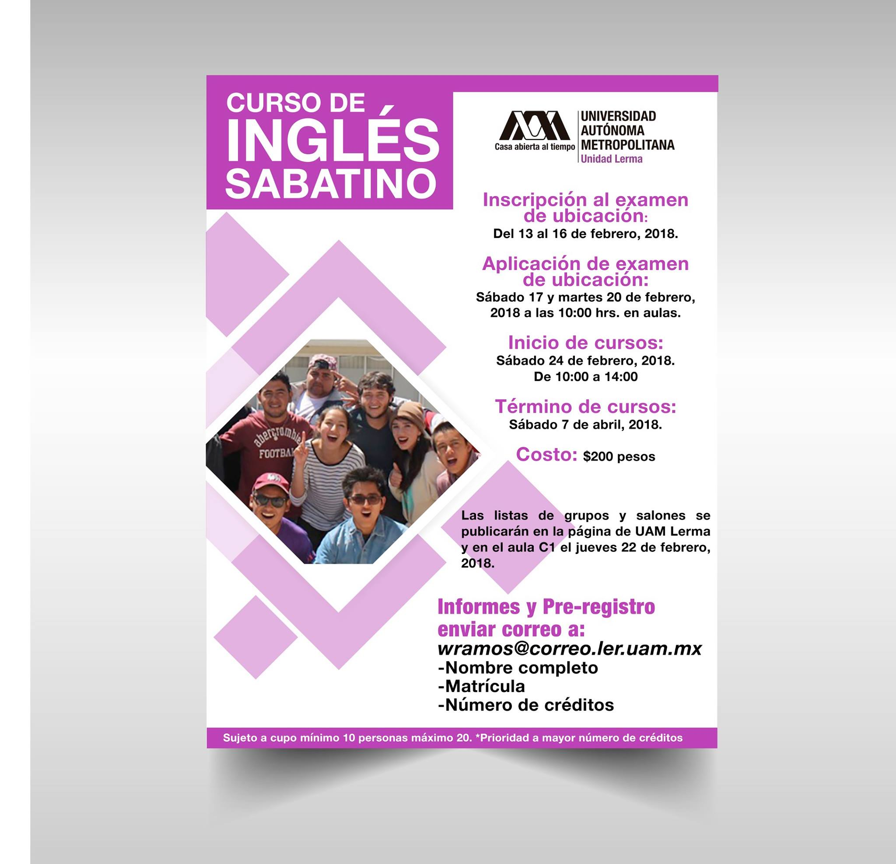

Oficina de Servicio Social - Rectoria UAM Lerma
+01 (728) 282 7002 Ext. 1062
serviciosocial@correo.ler.uam.mx
Coordinación de Enlace Académico
La Coordinación de Enlace Académico tendrá como funciones:
- Promover la identidad unitaria
- Difundir los programas académicos que ofrece la Unidad en las instituciones de educación media superior y en la sociedad en general
- Coordinar, promover y gestionar la movilidad del alumnado
- Gestionar, promover y dar seguimiento a convocatorias en las que el alumnado pueda participar
- Buscar vacantes laborales y promocionarlas entre el alumnado próximo a egresar, las egresadas y los egresados
- Dar seguimiento a las egresadas y los egresados para registrar su inclusión y desempeño laboral
- Promover y gestionar becas para el alumnado de la Unidad
- Promover el aprendizaje de lenguas extranjeras
- Coordinar las actividades de inducción a la vida universitaria en cada nuevo ingreso
- Coordinar y dar seguimiento a las Evaluaciones Médica, Física, Sicológica y Nutricional (EMFSyN)
- Promover la realización de actividades deportivas
- Apoyar en la organización de cursos y eventos de las coordinaciones de la Rectoría y Secretaría de la Unidad
Además de coadyuvar con las demás instancias de Rectoría y Secretaría para el eficaz cumplimiento de sus funciones, y otras actividades que le asigne el Rector de Unidad.
De esta coordinación dependerán las siguientes oficinas y secciones:
- Sección de Actividades Deportivas
- Oficina de Becas y Movilidad
- Oficina de Bolsa de Trabajo, Servicio Social y Prácticas Profesionales
- Oficina de Apoyo Académico (CONACYT, PRODEP, COMECYT, entre otros.)
- Oficina de Convenios y Contratos
I. Normatividad
- Se entiende por servicio social, el conjunto de actividades realizadas por los alumnos o egresados de la Universidad en beneficio de la sociedad y el Estado. El cumplimiento del servicio social es obligatorio y deberá ser realizado como requisito previo para obtener el título de licenciatura.
- El servicio social tiene por objeto que los alumnos o egresados:
- Participen en la solución de problemas prioritarios locales, regionales, nacionales.
- Desarrollen una conciencia de responsabilidad social, y
- Se formen integralmente y se capaciten profesionalmente de manera que apliquen los conocimientos adquiridos.
- Para iniciar el registro del servicio social es obligatorio haber cubierto el 70% de créditos (9° trimestre cursado y aprobado).
- El servicio social únicamente puede realizarse en los programas o proyectos aprobados por los órganos colegiados.
- PROYECTOS DE SERVICIO SOCIAL APROBADOS
En caso de que el alumno o egresado tenga una propuesta diferente a las ofrecidas:
La institución receptora de su interés deberá presentar el proyecto en la Oficina de Servicio Social de su División Académica, en los formatos correspondientes, con el objeto de ser sometido a consideración del Consejo Académico o Consejo Divisional, según corresponda
Para mayor información consultar el apartado VII. Instituciones Receptoras.
- Una vez aceptado en la institución receptora, el registro del servicio social deberá hacerse durante los primeros 30 días naturales a partir de su inicio. NO es posible acreditarlo de manera retroactiva.
- Para liberarlo se requiere cubrir 480 horas en un plazo no menor a 6 meses; ni mayor a dos años, así como presentar en la Oficina de Servicio Social de la División Académica correspondiente, la Carta de Término e Informe Final de Actividades.
- El alumno o egresado que sea Trabajador de la Federación, podrá acreditar su servicio social, siempre y cuando tenga 6 meses de antigüedad y presente los requisitos siguientes:
- Constancia de créditos que certifique haber cubierto al menos 70% de los créditos del plan de estudios respectivo.
- Constancia de trabajo y último recibo de nómina.
- Informe de actividades realizadas que justifique su vinculación preferentemente con los objetivos del plan de estudios de la licenciatura cursada.
Constancia de Trabajo e Informe de Actividades: CBI - CBS - CSH
II. Asesores
- Los prestadores que realicen su servicio social en una institución externa a la UAM deben contar con un asesor interno, éste será el que se mencione en la última hoja del proyecto de servicio social, en el campo: Asesor(a) de la UAM.
Cuando el servicio social se lleve a cabo al interior de la UAM, el asesor del alumno será el responsable que formuló el programa o proyecto de servicio social.
III. Inscripción
- La Carta de Presentación que solicita la institución receptora te será entregada en un tiempo máximo de 5 días hábiles y para solicitarla a la Oficina de Servicio Social de tu División Académica, deberás llenar el Formato de Inscripción (externo) (interno) y presentar tu Constancia de Créditos.
- Una vez aceptado en la institución receptora, el registro del servicio social deberá hacerse durante los primeros 30 días naturales a partir de su inicio. NO es posible acreditarlo de manera retroactiva. Por lo que deberás entregar en la Oficina de Servicio Social de tu División Académica:
- Carta de Aceptación (externo CBI - CBS - CSH) o (interno CBI - CBS - CSH)donde se mencione las actividades que vas a realizar. Si es en programa o proyecto externo deberá ser firmada y sellada por el responsable del Departamento de Servicio Social o Recursos Humanos de la dependencia. Si es en un programa o proyecto de la UAM deberá ser emitida, firmada y sellada por el responsable del programa o proyecto.
- Cronograma de Actividades en caso de participar en un programa o proyecto externo.
- Comprobante de Seguro Médico: IMSS, ISSSTE, ISSEMYM, Seguro Popular, Seguro de Gastos Médicos con alguna aseguradora, otros
- Seguro Facultativo :Es un seguro médico al cual tienen derecho los estudiantes inscritos en los niveles medio superior, superior y posgrado para recibir atención médica, quirúrgica, farmacéutica y hospitalaria, en las instalaciones del Instituto Mexicano del Seguro Social (IMSS). El alumno contará con dicho seguro durante el tiempo que permanezca como alumno activo de la institución.
- El egresado deberá adquirir por su propia cuenta el seguro médico de su preferencia o en su caso el que indique la institución receptora; éste deberá cubrir el periodo que dure la prestación del servicio social.
- Seguro Facultativo :Es un seguro médico al cual tienen derecho los estudiantes inscritos en los niveles medio superior, superior y posgrado para recibir atención médica, quirúrgica, farmacéutica y hospitalaria, en las instalaciones del Instituto Mexicano del Seguro Social (IMSS). El alumno contará con dicho seguro durante el tiempo que permanezca como alumno activo de la institución.
- Carta de Aceptación (externo CBI - CBS - CSH) o (interno CBI - CBS - CSH)donde se mencione las actividades que vas a realizar. Si es en programa o proyecto externo deberá ser firmada y sellada por el responsable del Departamento de Servicio Social o Recursos Humanos de la dependencia. Si es en un programa o proyecto de la UAM deberá ser emitida, firmada y sellada por el responsable del programa o proyecto.
IV. Seguimiento
-
La evaluación de los programas y proyectos de servicio social genera información confiable para la toma de decisiones en lo concerniente a su modificación, retro-alimentación o suspensión, por lo que es importante presentar, el cronograma de actividades y los informes trimestrales (externo) (interno), a tu asesor externo e interno, con el fin de dar cuenta de las actividades que realizas y como éstas contribuyen en tu formación profesional.
-
V. Renuncia
-
Cuando el prestador de servicio social se ausente o renuncie por causa justificada al programa o proyecto al que se encuentra inscrito o cuando éste se suspenda o cancele, podrá solicitar a la Oficina de Servicio Social de su División Académica su incorporación a otro proyecto y se contabilizarán las horas correspondientes, previa entrega de la Carta e Informe de Servicio Social Parcialmente Cubierto (externo CBI - CBS - CSH) (interno CBI - CBS - CSH) firmado por su asesor interno y externo, según sea el caso. La totalidad de las horas del servicio social se podrán cubrir en un máximo de tres programas o proyectos. En estos casos el prestador del servicio social deberá notificarlo por escrito. Solicitud de Baja (externo CBI - CBS - CSH) (interno CBI - CBS - CSH).
VI. Terminación
-
Al concluir la prestación de servicio social, deberás presentar, en la Sección de Servicio Social de tu División Académica, en un plazo no mayor a 30 días naturales, a partir de la fecha de conclusión, los documentos siguientes:
- Carta de Término e Informe Final de Actividades (externo CBI - CBS - CSH) (interno CBI - CBS - CSH)
- Carta de Término, expedida por la institución receptora, en la que conste el cumplimiento de las actividades asignadas y el periodo de realización.
Si fue en programa o proyecto externo deberá ser emitida, firmada y sellada por el responsable del Departamento de Servicio Social o Recursos Humanos de la dependencia en donde se realizó el servicio social. Si fue en un programa o proyecto de la UAM deberá ser emitida, firmada y sellada por el responsable del programa o proyecto.
- Informe Final de Actividades firmado por el alumno o egresado y los asesores (interno y externo)
- La Constancia de Acreditación de Servicio Social se entregará a la Coordinación de Servicios Escolares de la Unidad, en un tiempo máximo de 15 días hábiles, con el fin de que el prestador continúe con su trámite de titulación.
VII. Instituciones Receptoras
Registro de programas y proyectos de servicio social
- Las áreas solicitantes de prestadores de servicio social tanto externas (dependencias gubernamentales, federales, estatales, municipales, empresas mercantiles, asociaciones y fundaciones que atienden necesidades de diversos sectores de la sociedad), como internas (órganos colegiados, órganos personales, instancias de apoyo, alumnos y miembros del personal académico de la UAM), deberán llenar los formatos de Registro del plan, programa o proyecto de servicio social (formato programas) (formato proyectos) (extenso), con el fin de ser sometido el proyecto a consideración del Consejo Académico o Consejo Divisional, según corresponda.)
- Los formatos del enciso A. deberán ir acompañados con un oficio dirigido al Presidente del Consejo Divisional, según corresponda. (externo CBI - CBS - CSH) (interno CBI - CBS - CSH)
- Para las A.C. (Asociaciones Civiles) ONG’S (Organizaciones No Gubernamentales), IAP (Instituciones de Asistencia Privada) e IP (Instituciones Privadas), se requiere:
- Copia de Acta Constitutiva
- Copia de identificación oficial
- Copia del RFC del representante legal
- Comprobante de domicilio
- Los documentos de los encisos A., B. y C. deben ser enviados a la Oficina de Servicio Social de la División Académica correspondiente.
- Una vez aprobado el programa o proyecto, se notificará el Acuerdo del órgano colegiado respectivo y será a partir de esa fecha que podrá contar con prestadores de servicio social de la UAM-Lerma.
Proyectos Aprobados de Servicio Social
División de Ciencias Básicas e Ingeniería
| Licenciatura | Institución Receptora | Clave de Aprobación | Proyecto |
|---|---|---|---|
| Ingeniería en Recursos Hídricos, Ingeniería en Computación y Telecomunicaciones, Ingeniería en Sistemas Mecatrónicos Industriales. | UAM Unidad Lerma | DCBI.107.10.2021 | Sistemas Autónomos |
| Ingeniería en Computación y Telecomunicaciones | UAM Unidad Lerma | DCBI.107.9.2021 | Front-End para el seguimiento y obtención de estadísticas escolares |
| Ingeniería en Recursos Hídricos | Organismo de Agua y Saneamiento de Toluca | DCBI.107.8.2021 | Catastro Hidráulico de la Red de Agua Potable Municipal, Toluca. |
| Ingeniería en Recursos Hídricos | UAM Unidad Lerma | DCBI.106.8.2021 | Síntesis electroquímica de óxido de grafeno como precursor de materiales grafénicos y algunas aplicaciones. |
| Ingeniería en Recursos Hídricos | OOAPAS Morelia, Michoacán | DCBI.105.5.2020 | Planeación operativa de inspección, mantenimiento y reparación de las redes de alcantarillado sanitario y pluvial de Morelia, Michoacán. |
| Ingeniería en Recursos Hídricos | OPDAPAS San Mateo Atenco | DCBI.103.5.2020 | Proyecto de redes de distribución y conducción y análisis de la infraestructura hidráulica para la mejora de los servicios de agua potable y drenaje. |
| Ingeniería en Recursos Hídricos | Constructoría S.A. DE C.V. | DCBI.100.7.2020.B | Estudios hidrológicos y diseños de obras (constructoría) |
| Ingeniería en Recursos Hídricos | UAM Unidad Lerma | DCBI.011.42.2016 | Análisis del agua en México |
| Ingeniería en Recursos Hídricos | UAM Unidad Lerma | DCBI.095.05.2019.B | Interacciones sólido-líquido-gas en flujos confinados y no confinados |
| Ingeniería en Recursos Hídricos | CONAGUA | DCBI.091.08.2019.A | Proyecto Genérico Preservación, administración y seguridad hídrica (Conagua) |
División de Ciencias Biológicas y de la Salud
Becas
Aquí se colocará toda la información, requisitos, guías y documentos necesarios se puede organizar la información en tablas
| Beca | Nivel | Monto | Requisitos |
|---|---|---|---|
| Descripción de beca A | Nivel de beca A | $###,###.## | Requisitos y tramites para obtener la beca |
| Descripción de beca B | Nivel de beca B | $###,###.## | Requisitos y tramites para obtener la beca |
| Descripción de beca C | Nivel de beca C | $###,###.## | Requisitos y tramites para obtener la beca |
| Descripción de beca D | Nivel de beca D | $###,###.## | Requisitos y tramites para obtener la beca |
| Descripción de beca E | Nivel de beca E | $###,###.## | Requisitos y tramites para obtener la beca |
| Descripción de beca F | Nivel de beca F | $###,###.## | Requisitos y tramites para obtener la beca |
| Descripción de beca G | Nivel de beca G | $###,###.## | Requisitos y tramites para obtener la beca |
| Descripción de beca H | Nivel de beca H | $###,###.## | Requisitos y tramites para obtener la beca |
Distinciones
Aquí se colocará toda la información, requisitos, guías y documentos necesarios se puede organizar la información en tablas
| Nivel | Monto | Requisitos | |
|---|---|---|---|
| Descripción | Nivel de la distinción A | $###,###.## | Requisitos y tramites para la distinción A |
| Descripción | Nivel de la distinción B | $###,###.## | Requisitos y tramites para la distinción B |
| Descripción | Nivel de la distinción C | $###,###.## | Requisitos y tramites para la distinción C |
| Descripción | Nivel de la distinción D | $###,###.## | Requisitos y tramites para la distinción D |
| Descripción | Nivel de la distinción E | $###,###.## | Requisitos y tramites para la distinción E |
| Descripción | Nivel de la distinción F | $###,###.## | Requisitos y tramites para la distinción F |
| Descripción | Nivel de la distinción G | $###,###.## | Requisitos y tramites para la distinción G |
| Descripción | Nivel de la distinción H | $###,###.## | Requisitos y tramites para la distinción H |
Estímulos
Aquí se colocará toda la información, requisitos, guías y documentos necesarios se puede organizar la información en tablas
| Nivel | Monto | Requisitos | |
|---|---|---|---|
| Descripción | Nivel del estímulo A | $###,###.## | Requisitos y tramites para el estímulo A |
| Descripción | Nivel del estímulo B | $###,###.## | Requisitos y tramites para el estímulo B |
| Descripción | Nivel del estímulo C | $###,###.## | Requisitos y tramites para el estímulo C |
| Descripción | Nivel del estímulo D | $###,###.## | Requisitos y tramites para el estímulo D |
| Descripción | Nivel del estímulo E | $###,###.## | Requisitos y tramites para el estímulo E |
| Descripción | Nivel del estímulo F | $###,###.## | Requisitos y tramites para el estímulo F |
| Descripción | Nivel del estímulo G | $###,###.## | Requisitos y tramites para el estímulo G |
| Descripción | Nivel del estímulo H | $###,###.## | Requisitos y tramites para el estímulo H |
La oficina de Movilidad es un área de enlace administrativo entre las tres Divisiones Académicas de la Unidad y la Rectoría General, cuyo objetivo es facilitar el intercambio inter-universitario de estudiantes dentro de acuerdos de cooperación celebrados entre nuestra Casa de Estudios e Instituciones de Educación Superior tanto nacionales como extranjeras, siempre con apego a la normatividad, políticas, lineamientos y procedimientos establecidos aplicables.
Es importante que consultes el Reglamento de Estudios Superiores.
Alumnos
Realizar una estancia de estudios en otra Universidad te permite enriquecer tu formación profesional, confirmar tu percepción del nivel académico de la UAM-Lerma y obtener una valiosa experiencia cultural que marcará tu vida.
Para empezar tu trámite y obtener mayor información, te agradecemos acudir a la Oficina K3, ubicada enfrente de las canchas de basquetbol y futbol, a un costado del Servicio Médico.
Las convocatorias, tanto para Movilidad Nacional como Internacional, se publican dos veces al año, en la página institucional de Cooperación Académica, así como en el semanario de la UAM:
La Universidad Autónoma Metropolitana preocupada por ofrecer alternativas que coadyuven en la inserción laboral de sus estudiantes y egresados, ofrece el Sistema Institucional de Bolsa de Trabajo (SIBOT) con la finalidad de facilitar la vinculación con las Empresas, Organizaciones e Instituciones (EOI) que buscan profesionales que satisfagan sus requerimientos de recursos humanos calificados.
Servicios
El SIBOT ofrece los siguientes servicios:
- A los Candidatos:
- Consulta de vacantes de empleo y los perfiles que buscan.
- Actualizar sus datos en el sistema periódicamente.
- Postularse directamente como candidato en la vacante donde reúna el perfil solicitado.
- Información sobre las actividades que organiza la universidad en apoyo a la inserción laboral.
- A las Empresas, Instituciones y Organizaciones (EOI):
- Registrar vacantes de empleo a nivel profesional.
- Difusión oportuna de sus vacantes entre alumnos y egresados de licenciatura y posgrado de la universidad.
- Consultar la cartera de los candidatos registrados, de acuerdo con el (los) perfil (es) que requiera.
- Identificar a los postulantes de sus vacantes.
- Tiene la opción de desactivar sus vacantes una vez que las haya cubierto.
- Cambiar la contraseña de acceso en el momento que lo decida.
El servicio del SIBOT es gratuito y es de uso exclusivo para alumnos y egresados de la UAM. Las EOI interesadas en registrarse, podrán hacerlo cumpliendo con los requisitos que marca el registro.
Requisitos de inscripción para candidatos »
- El servicio es exclusivo para alumnos y egresados pertenecientes a las Unidades de la UAM. Los alumnos que tengan estado académico de baja reglamentaria no podrán utilizarlo.
- Después de verificar los datos, la activación se realizará en un plazo no mayor a dos días hábiles.
- Los formularios de los pre-registros que no se encuentren completos se eliminarán, esto con el propósito de que puedan ser llenados nuevamente.
- Es importante que la información incluida sea veraz y sin errores ortográficos. Considera que la información estará visible para los responsables de las empresas solicitantes.
- La vigencia del registro es de seis meses. Al cumplir el plazo, si deseas continuar con el servicio, deberás solicitar tu reactivación en los siguientes teléfonos y correos electrónicos:
El sistema institucional de bolsa de trabajo (SIBOT) »
 |
 |
